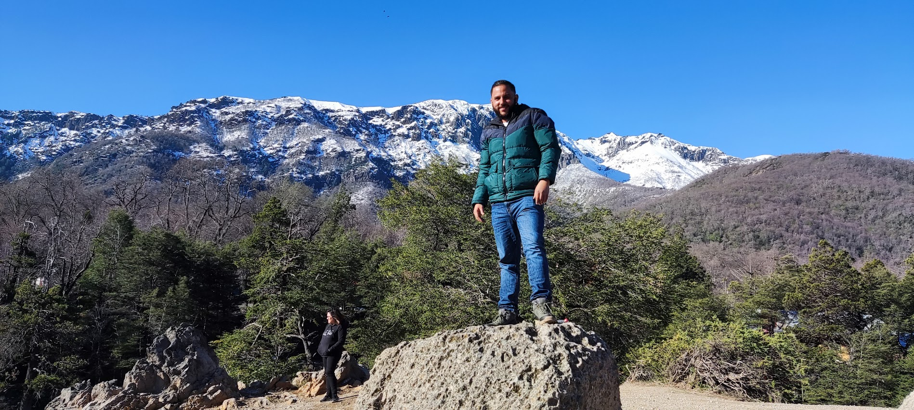

Ingeniero Mecánico
Estudiante de Desarrollo Web

Ingeniero Mecánico
Estudiante de Desarrollo Web

Ingeniero mecánico con 8 años de experiencia en Venezuela, Ecuador y Chile, especializado en sistemas de refrigeración.

Actualmente trabajo como técnico en telecomunicaciones desde hace casi 2 años en Santiago de Chile, y hoy en día también soy un estudiante de Desarrollo Web.

Buscando centrarme bien sea en el front-end, back-end o ambos con la meta de lograr un balance entre una codificación amigable y un diseño atractivo.